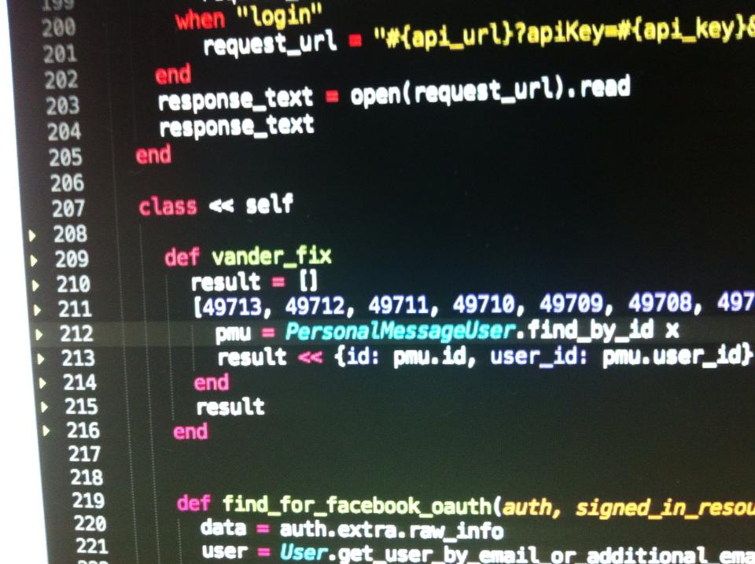

Meaningful Names
What do we need to know & why it matters.
Jonathan Andrés - @jcabasc
what does this function do?

No, seriously
The way the I see, coding is like “writing a book, or an article in the newspaper”, you need to express yourself so good in a way the people would buy it.
Clean Code
That means, you have to be as clear as possible and release something understandable, no matter what language you’re using. You have to deliver clean code.
Why is important?
- People who read your code will understand.
- You will do a favor for yourself later.
- it would be easy to read, maintain or extend.
Use Intention-Revealing Names
The name of a variable, function, or class, should answer all the big questions. It should tell you why it exists, what it does, and how it is used. If a name requires a comment, then the name does not reveal its intent.
Use Intention-Revealing Names
// what are these?
int ca;
int ua;
def get_dau
self.order(:created_at).all.map do |item|
[item.created_at, item.active_users.to_i]
end
def get_mau
self.order(:created_at).all.map do |item|
[item.created_at, item.unique_active_users]
end
end
Avoid Disinformation
- Programmers must avoid leaving false clues that obscure the meaning of code.
- We should avoid words whose entrenched meanings vary from our intended meaning.
- Beware of using names which vary in small ways.
- No information at all is better than misleading information.
“Spelling similar concepts similarly is information. Using inconsistent spellings is dis- information.”
Avoid Disinformation
// Long variables
ABCModuleForEfficientHandlingOfDates
ABCModuleForEfficientStoringOfDates
customerList // hash
quantity //percentage
int a = l;
if ( O == l )
a = O1;
else
l = 01;
Make meaningful Distinctions
- Avoid misspelling names to satisfy your code.
- Number series are noninformative and noise words are meningless distinctions.
- Distinguish names in such a way that the reader knows what the differences offer.
Make meaningful Distinctions
//
get_active_ccount()
get_active_account_info()
def copy_content(a1, a2) {
for (int i = 0; i < a1.length; i++) {
a2[i] = a1[i]
}
}
Class CustomerInfo
end
Class CustomerData
end
Use Pronounceable Names
People are good at words, so take advantage of that. Make your names pronounceable.
Use Searchable Names
Names should be easy to locate across a body of text.
def message
MESSAGE if total > 0 && percent_with_prices <= 10
end
Avoid Encodings
Encoding type or scope information into names simply adds to the burden of deciphering. They are a mental burden, seldom pronounceable and easy to mistype.
Avoid Mental Mapping
- Readers should not need to mentally translate your names into other names they already know/are familiar with.
-
Legendaries
i, j, kvariable names are really only okay for use as loop counters if their scope is very small and no other names can conflict with them.
Class Names
-
Classes and objects should have noun or noun-phrase names, like
Customer,WikiPage, Account and AddressParser. -
But avoid names like
Manager, Processor, Data or Infoin the name of a class. - A class name should not be a verb.
Method Names
Methods should have verb or verb-phrase names, like deletePage or save.
Don’t Be Cute
Don’t be too clever or humourous with your names.
Name things as what they are.
Pick One Word per Concept
- Pick and use one word for abstract concept and stick with it.
- A consistent lexicon is a great boon (helpful) to the programmers who use your code.
-
ie: Do you think these methods
fetch, get and retrievecould be equivalent in different classes?
Don’t Pun
Avoid using the same word for two purposes. Using the same term for two different ideas is essentially a pun.
Use Solution Domain Names
The people who read you code are programmers, so go ahead and use computer science terms, algorithm names, pattern names, math terms, and so forth, such as AccountObserver, where Observer means the Observer pattern.
Use Problem Domain Names
To make code more understandable to anyone involved in solving a problem, it is better to use meaningful names in a domain context.
That means, use business language.
Add meaningful Context
The context is very important to understand a name, because it has additional information.
You can add context to names by using prefixes or enclosing them in well-named classes, functions, or namespaces.
Don’t Add Gratuitous Context
- Shorter names are generally better than longer ones, so long as they are clear.
- Add no more context to a name than is necessary.
El Fin

@jcabasc - github.com/jcabas